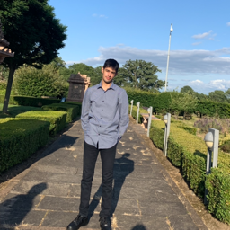
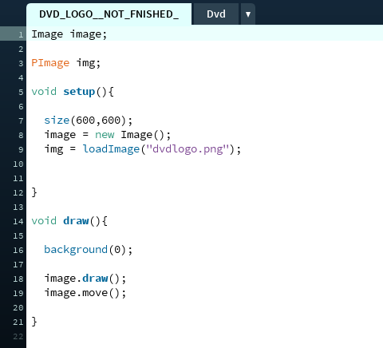
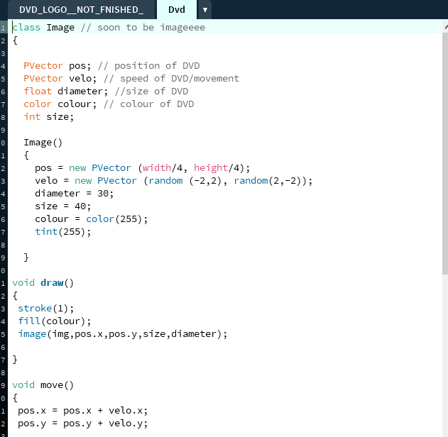
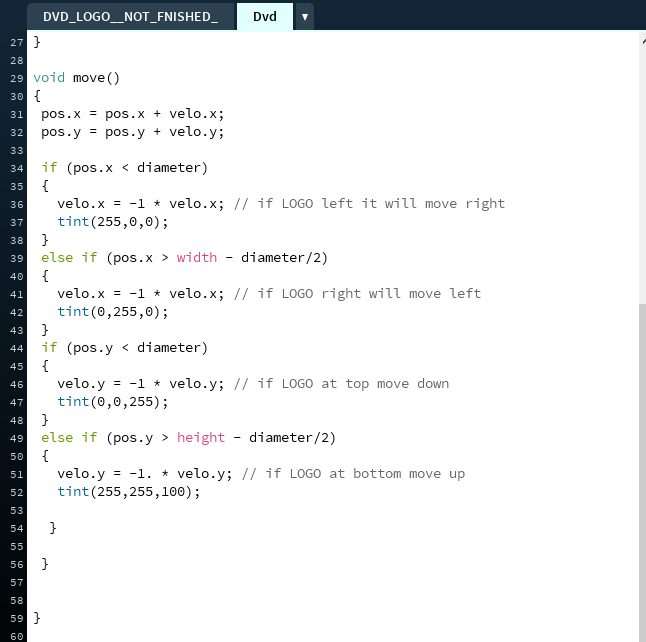

Deep ShahHello my name Deep
|
 | |
|
|
||
Bootcamp 2020: Forest sceneThis is my first programming project, which demonstrate some of the things I have learnt in the 2 week we had a Programming Bootcamp at City (2020). This Processing project demonstrates the use of if and else statements, collision with the sketch walls, use of variables. I have created a DVD logo which will bounce off sketch walls everytime it is hit. In turn this will change the logo's colour to a random colour. Specifics of the balls behaviour is stored (velo - speed, xposition, yposition, color). The ball will bounce randomly if one side is hit and will change colour as shown in the video below. Check out the code on Github: https://deeps021.github.io/ | ||
|    | ||